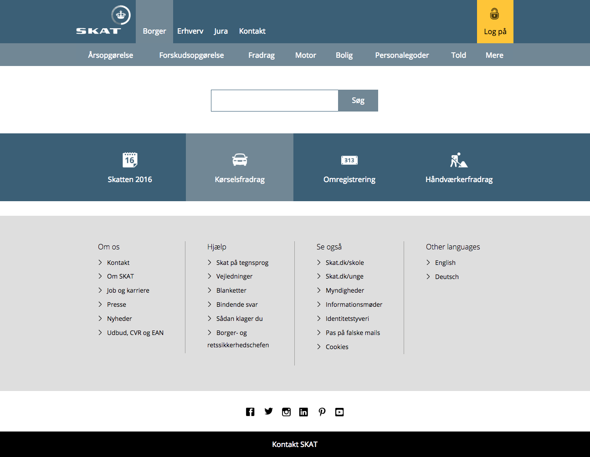
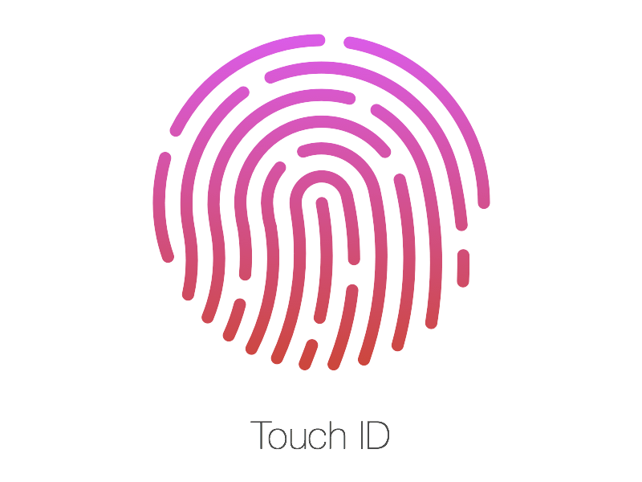

Marco
B.Sc. in Design and Innovation
Marco has arrived in Denmark three weeks ago to study design for a three-year bachelor at the University of Århus and in a couple of weeks he was able to find a job as a student assistant at LEGO in Billund.
He is very concerned with his money.
| Aware | Join | Use | Leave | ||
|---|---|---|---|---|---|
User |
Step | Just got a student assistant job at LEGO. | After CPR, work permit, NemKonto, NemID | Fill the Tax Card form | Confirmation and sign out |
| Experience | "Very excited about the new job, but now that I'm an all grown up it seems that I need to create this Tax Card and get in touch with this SKAT institution." 🤔 | "Oh bummer! So many documents to get, now that I'm done I hope SKAT is faster than the other institutions that I have been through." 😠 | "Nice! It's good that the systems are all integrated. Very easy to access everything that governament related." 😊 | "I got a clear confirmation message, and an e-mail. A downloable document, which seems to be the tax card is also available anytime. I'm good to go." 😌 | |
Channels |
Website |

Website → English → Young taxpayers → Job → Getting a tax card This will bring the user to page with information of what to do next. The language selection should be available at any time. |
Connect with NemID. |
Here is the first time the user access SKAT. It must be evident that
getting the Tax Card is the main task to be done now. Get your Tax Card → Guide through Tax Card. Should be able to be done in less than five minutes. |
When the form is completed, a confirmation page is shown and an e-mail
is sent. The tax card is then available for download. The next steps (if any) should also be shown to the user. |
| Search | The keywords "Tax Card" brings within the top three results the page "Getting a tax card" mentioned in the website channel. | ||||
| Mobile website | The mobile website should be able to offer both the navigation and the search functionality. |  Connect with NemID or with Touch ID. |
Works similarly to website. (Challenges with file upload: scan files with camera?) |
Same as website. | |
| Customer services | |||||